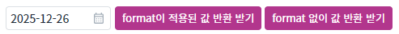
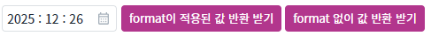
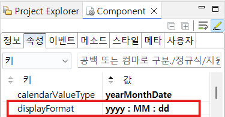

InputCalendar의 'getDisplayValue' 메소드를 사용하여 InputCalendar에 설정한 displayFormat이 적용된 값을 메소드로 반환받는 예제입니다.
format이 적용된 값 반환 받기
format 없이 값 반환 받기
1
STEP 1: 초기 상태를 확인합니다.
예제 영역 '(기본 설정) displayFormat = "yyyy-MM-dd"'와 'displayFormat = "yyyy : MM : dd"'에 구성된 버튼과 InputCalendar를 확인합니다.
Image 1.브라우저(Chrome) 실행 예시 - 2025.12.26 기준

Image 2.브라우저(Chrome) 실행 예시 - 2025.12.26 기준

2
STEP 2: format이 적용된 값 반환 받기
두 예제 영역에서 'format이 적용된 값 반환 받기' 버튼을 클릭하여 결과를 확인합니다.
Example 1.Log - (기본 설정) displayFormat = "yyyy-MM-dd"
[10:10:21] getDisplayValue : ' 2025-12-26 '
Example 2.Log - displayFormat = "yyyy : MM : dd"
[10:10:30] getDisplayValue : ' 2025 : 12 : 26 '
1
STEP 1: format 없이 값 반환 받기
두 예제 영역에서 'format 없이 값 반환 받기' 버튼을 클릭하여 결과를 확인합니다.
Example 3.Log - (기본 설정) displayFormat = "yyyy-MM-dd"
[10:15:52] getValue : ' 20251226 '
Example 4.Log - displayFormat = "yyyy : MM : dd"
[10:16:18] getValue : ' 20251226 '
'displayformat' 속성을 적용합니다.
y: Year
M: Month
d: Day
H: Hour
m: Minute
s: Second
S: Millisecond
Image 3.웹스퀘어 스튜디오의 Component View - 속성 설정 예시

'getDisplayValue' 메소드를 사용하여 displayFormat이 적용된 값을 반환 받습니다.
Example 5.Script
// 예제 파일에서는 스크립트 scwin.btn_ex1_onclick, scwin.btn_ex2_onclick, scwin.btn_ex3_onclick, scwin.btn_ex4_onclick에 작성되어 있습니다. //format이 적용된 값을 넘기는 경우 var returnValue = ica_exam_1.getDisplayValue(); //format 없이 값을 넘기는 경우 var returnValue = ica_exam_1.getValue();
displayFormat
getDisplayValue
getValue